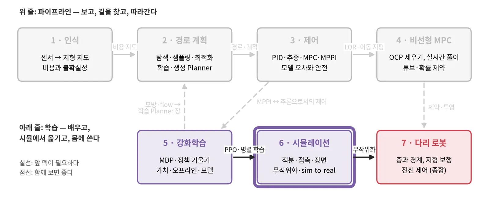
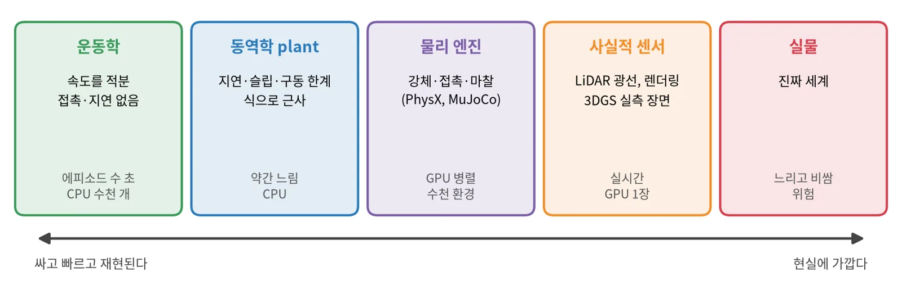
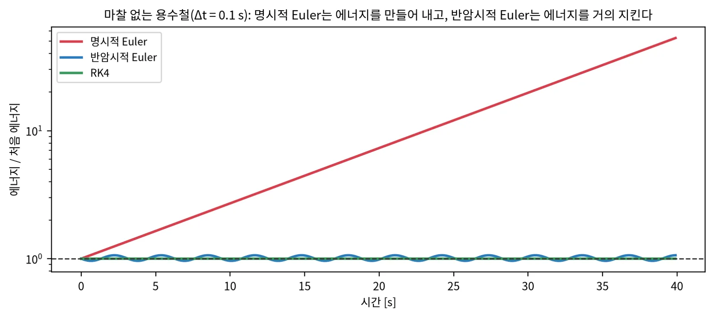
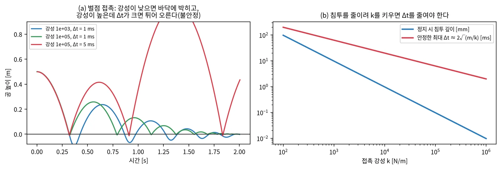
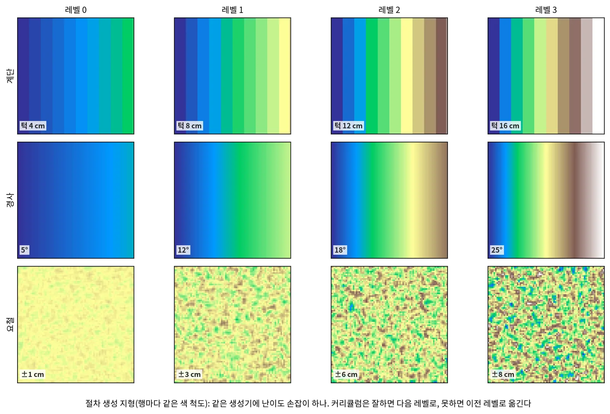
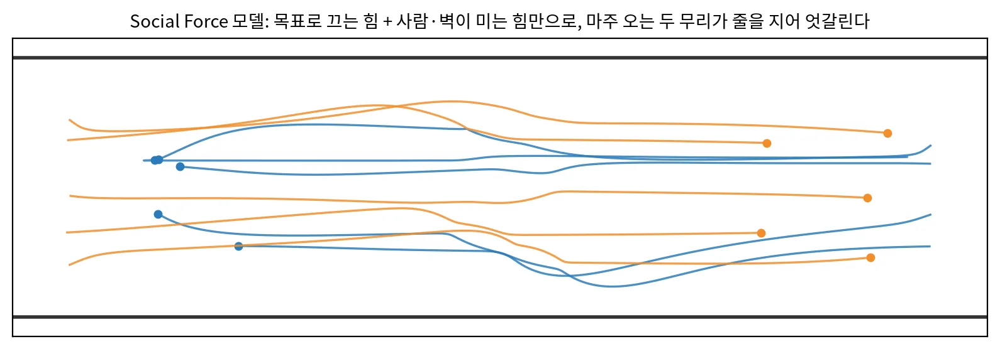
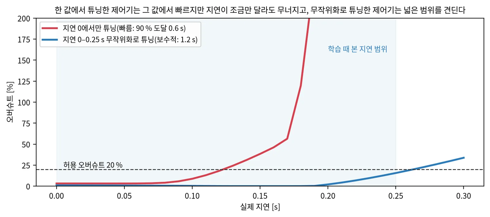

로봇 시뮬레이션 기초 · 개념 공부 덱
현실을 흉내 내되,
어디가 다른지 알고 쓴다
물리 엔진의 시간 스텝과 접촉, 절차 생성 장면과 보행자 모델, 센서와 sim-to-real, 평가의 신뢰도까지 — 그림과 배경지식과 장단점으로 보는 로봇 시뮬레이션
충실도 사다리
적분 · 접촉
엔진 · 재현성
장면 · 보행자
랜덤화 · SRCC
순서
엔진, 장면, 현실과의 차이, 평가의 순서로 간다
| 장 | 주제 | 답하는 질문 |
|---|---|---|
| 0 | 시작 | 시뮬은 무엇에 쓰고, 충실도는 어떻게 고르나? |
| 1 | 물리 엔진 | 시간 스텝과 접촉은 왜 어렵나? 엔진은 어떻게 고르나? |
| 2 | 장면과 보행자 | 장면은 어떻게 만들고, 사람은 어떻게 움직이게 하나? |
| 3 | 센서와 sim-to-real | 현실과의 차이는 어디서 오고, 어떻게 줄이고, 어떻게 재나? |
| 4 | 정리 | 장단점 표, 흔한 함정, 공부 순서 |
0 · 커리큘럼 6/7
학습과 평가가 모두 시뮬레이터 위에서 일어난다

5 강화학습의 PPO와 샘플 효율. 3 제어·4 MPC의 상태공간 모델과 적분.
도메인 랜덤화·커리큘럼 → 7 다리 로봇의 sim-to-real. 잡음 바닥 → 모든 덱의 비교 실험.
적분기 → 4 비선형 MPC 1장. 보행자 모델 → 1 인식의 사람 추적, 3 제어의 안전 장.
0 · 배경지식
네 가지 배경지식이면 이 덱을 따라올 수 있다
미분 방정식을 작은 시간 스텝으로 푼다
\(x_{t+\Delta t} \approx x_t + \Delta t\, f(x_t)\). 스텝이 크면 빠르지만 틀리거나 불안정하다.
떨어지지 않으려면 힘이 필요하다
물체가 겹치지 않게 하는 접촉력과 미끄러짐을 막는 마찰력이 시뮬의 가장 어려운 부분이다.
같은 입력이면 같은 출력인가
seed가 같아도 병렬 계산 순서·부동소수점 때문에 달라질 수 있다. 비교 실험의 바탕이다.
에피소드는 샘플이다
성공률은 확률의 추정이고 신뢰구간이 있다. 같은 설정 재실행으로 잡음 바닥을 잰다.
0 · 충실도 사다리
시뮬은 하나가 아니라 충실도와 비용이 다른 여러 층이다

| 질문 | 맞는 층 |
|---|---|
| Planner·Controller 조합 중 무엇이 나은가(수천 에피소드) | 운동학 + plant |
| 정책을 강화학습으로 학습한다 | GPU 물리 엔진(병렬 환경 수천) |
| 센서 → 지도 → 계획이 실제 신호로 도는가 | 사실적 센서 시뮬 |
| 시뮬 순위가 현실 순위를 맞히는가 | 실물과 짝 평가 |
1 · 물리 엔진
시간 스텝과 접촉이
정확도와 안정성을 정한다
빠르고 재현되는 엔진이 현실에 가깝다는 보장은 없다.
1 · 적분기
같은 스텝이어도 적분기에 따라 시뮬이 에너지를 만들어 내기도 한다

위치와 속도를 이전 값으로 동시에 갱신한다. 가장 단순하지만 진동계에서 발산한다.
속도를 먼저 갱신하고, 그 속도로 위치를 갱신한다. 비용은 같은데 오래 돌려도 안정하다. 게임·로봇 엔진의 기본이다.
다음 상태를 방정식으로 푼다. stiff한 접촉에도 안정하지만 감쇠가 생긴다.
1 · 접촉
페널티 접촉은 강성과 시간 스텝을 맞바꾸고, 제약 기반 접촉은 계산을 더 쓴다

| 접촉 모델 | 장점 | 단점 | 예 |
|---|---|---|---|
| 페널티(용수철·감쇠) | 단순, 미분 가능 | 침투와 스텝 크기를 맞바꾼다 | 초기 엔진, 미분 시뮬 |
| 제약 기반(LCP·볼록) | 침투 거의 없음, 큰 스텝 | 풀이 비용, 마찰 근사 | PhysX, MuJoCo(soft 제약) |
| 변형 지면(입자·MPM·SCM) | 모래·자갈·잔디 | 매우 비싸다 | Chrono, MPM 엔진 |
1 · 엔진 고르기
엔진은 병렬 학습, 센서, ROS 연동, 접촉 정확도 중 무엇이 필요한지로 고른다
| 엔진 | 강점 | GPU 병렬 학습 | ROS 2 | 잘 맞는 곳 |
|---|---|---|---|---|
| Isaac Sim + Isaac Lab | PhysX·Newton, RTX 센서, 3DGS | ○ 수천 환경 | ○ 브릿지 | 학습 + 센서 폐루프 |
| MuJoCo · MJX · Warp | 정확한 접촉, 가볍다 | ○ | ✕ | 제어·보행 연구, 동역학 데이터 |
| Newton | MuJoCo Warp 기반, 변형 지면 | ○ | ✕ | 변형 지면이 필요할 때 |
| Genesis | 자체 엔진, 높은 처리량 주장 | ○ | ✕ | 속도 실험 |
| Gazebo | ROS 표준, CPU | ✕ | ○ 표준 | GPU 없는 통합 시험 |
| Chrono | SCM·DEM·SPH 지형 | 일부 | 일부 | 모래·흙 |
| CARLA | UE 기반 자동차 도시 | ✕ | ○ | 자율주행 |
원칙: 장면과 평가를 빌려 올 생태계가 어디에 있는지가 엔진 선택을 크게 좌우한다.
Isaac Lab, NVIDIA — arXiv:2511.04831
1 · 엔진 고르기 · 영상
Isaac Sim은 한 장면에서 GPU 물리, 센서 렌더링, 로봇 소프트웨어를 함께 돌린다

물리(PhysX), RTX 센서, ROS 연동이 한 장면에서 돈다. 앞 표의 "학습 + 센서 폐루프"가 이 조합이다.
제품 소개 영상이다. 처리량과 실물 일치는 다음 장처럼 직접 잰 수치로 본다.
Isaac Sim (NVIDIA) · Isaac Lab, NVIDIA — arXiv:2511.04831
1 · 엔진 비교
빠르고 결정론적인 엔진이 현실에 가깝다는 보장은 없다
| 엔진 | 처리량(Franka) | 실물과 거리 | 병렬 / 재실행 변동 |
|---|---|---|---|
| Genesis | 1.11×10⁷ FPS | 4.78 cm | 0 / 0 |
| MuJoCo Warp | 3.54×10⁶ FPS | — | 있음 / 있음 |
| Isaac Lab | 1.85×10⁶ FPS | 5.40 cm | 있음 / 0 |
| ManiSkill | — | 2.52 cm | 있음 / 0 |
세 축 — 속도, 현실 일치, 재현성 — 은 따로 움직인다. 병렬 환경끼리 결과가 다르면 그것을 "반복"으로 세는 순간 잡음이 섞인다.
GPU 한 장. 현실 일치는 경사 충돌 실험 16회와의 EMD. 조작 장면만 쟀고 바퀴 접촉은 없다.

GPUSimBench, IROS 2026 — arXiv:2607.13059
1 · 재현성과 잡음 바닥
비교하기 전에 같은 설정을 두 번 돌려 무엇이 뒤집히는지 잰다
같은 seed → 같은 결과
숫자가 하나라도 바뀌면 그것은 변경이 한 일이다. 빠른 1차 관문(스모크)으로 쓴다.
같은 설정에서도 결과가 뒤집힌다
난이도 높은 지형, 반응형 보행자, 지연·잡음. 한 판의 1–2개 차이는 근거가 아니다.
| 할 일 | 이유 |
|---|---|
| 같은 설정 재실행으로 뒤집히는 수(잡음 바닥)를 잰다 | 그보다 작은 차이는 우연 |
| 같은 seed·같은 조건끼리 짝지어 비교한다 | 장면 난이도 차이를 지운다 |
| seed와 난수 오프셋을 여러 판 돌린다 | 한 판의 운을 평균한다 |
| 안전 실패는 통계와 따로 센다 | 치명 실패 하나는 평균으로 지우지 않는다 |
2 · 장면과 보행자
장면 배치가 현실 분포를 따를 때
학습이 일반화된다
절차 생성은 양과 난이도 조절을, 실측은 현실 분포를 준다. 사람은 규칙·사건·학습으로 움직인다.
2 · 절차 생성과 커리큘럼
지형 생성기에 난이도 파라미터를 두면 실패 경계와 학습 순서가 보인다

양이 무한하고, 난이도를 파라미터로 조절한다. 포화된 벤치마크에서 실패가 시작되는 경계를 찾는다.
현실 분포를 따르지 않는다. 생성기 밖의 지형(이상한 조합)은 나오지 않는다.
Rudin 외, Learning to Walk in Minutes Using Massively Parallel Deep RL(게임식 커리큘럼) — arXiv:2109.11978
2 · 절차 생성과 커리큘럼 · 영상
로봇 수천 대가 같은 지형 격자 위를 동시에 걷고, 난이도는 행마다 올라간다

지형이 격자로 깔려 있고 행마다 어려워진다. 넘은 로봇은 어려운 행으로, 절반도 못 간 로봇은 쉬운 행으로 옮긴다.
앞 장의 레벨 0–3이 이 격자의 행이다. 난이도 파라미터 하나가 학습 커리큘럼과 실패 경계 찾기를 함께 준다.
Rudin 외, Learning to Walk in Minutes Using Massively Parallel Deep RL — arXiv:2109.11978
2 · 보도·도시 시뮬레이터
보도 시뮬레이터는 절차 생성에서 실제 영상 기반 장면으로 옮겨 갔다
MetaDrive
2021, 자동차
→
MetaUrban
ICLR 2025, 보도 절차 생성
→
URBAN-SIM
CVPR 2025, GPU 병렬
→
UrbanVerse
ICLR 2026, 영상 → 장면
→
SidewalkBench
CoRL 2026, 평가

타일 단위 지형 잇기(WFC), GPU ORCA 보행자, 환경 256개를 1,800–2,600 fps.
도시 영상 → 장면 그래프 → 에셋 → 장면. 현실 배치는 늘릴수록 성능이 멱법칙으로 오르고, 템플릿 생성은 거의 안 오른다.
MetaUrban arXiv:2407.08725 · URBAN-SIM arXiv:2505.00690 · UrbanVerse arXiv:2510.15018 · SidewalkBench arXiv:2606.16953
2 · 보도·도시 시뮬레이터 · 영상
MetaUrban은 보도의 기능 구역에 물체를 놓고 사람과 로봇으로 채운다

도로 블록을 이어 만든 지도, 네 구역에 놓인 물체, SMPL-X 사람 1,100명과 배달로봇·휠체어·로봇 개가 한 보도를 쓴다.
템플릿 생성이라 현실 분포를 따르지 않는다. 앞 장의 UrbanVerse 결과가 그 한계를 수치로 보였다.
MetaUrban, ICLR 2025 — arXiv:2407.08725
2 · 보행자 모델
보행자 모델은 힘·속도·사건·언어·데이터의 다섯 갈래다
| 갈래 | 대표 | 장점 | 단점 |
|---|---|---|---|
| 힘 모델 | Social Force | 싸고 자연스러운 흐름 | 튜닝에 민감, 진동 |
| 속도 최적화 | ORCA | 충돌 없는 속도 보장, 빠름 | 모두 협조한다고 가정 → 로봇을 과하게 비켜 줌 |
| 사건 스크립트 | 상태 기계 | 재현돼 평가에 공정 | 목록 밖 상호작용 없음 |
| 언어로 만든 행동 트리 | LLM + 힘 모델 | 다양한 시나리오 생성 | 생성 비용, 검증 |
| 데이터 기반 생성 | 궤적 diffusion | 현실 분포 | GPU 비용, 재현 어려움 |

Helbing·Molnár, Social Force (1995) · van den Berg 외, ORCA (ISRR 2011) · HuNavSim arXiv:2305.01303
2 · 평가
성공률이 포화되면 층을 나누고, 거리로 정규화하고, 비용으로 가른다
| SidewalkBench 층 | 시나리오 | 지표 |
|---|---|---|
| 단위 시험 | 330 | 경로 완주율 |
| 보행자 반응(사건 8종) | 800 | 성공률 |
| 장거리(100 m 이상) | 105 | 100 m당 실패 |
- 보행자 횡단이 가장 어렵다: 평균 성공 0.01, 충돌 0.68
- 절차 생성 장면 성능이 실제 스캔 장면 성능과 강하게 상관
보행자 상해(충돌 순간 Δv), 파손, 흔들림을 돈으로 환산. 기준선 7개 모두 적자였다.

SidewalkBench arXiv:2606.16953 · CostNav arXiv:2511.20216
2 · 장단점
장면과 보행자는 양·재현성과 현실성을 맞바꾼다
| 선택 | 한쪽 | 다른 쪽 |
|---|---|---|
| 장면 출처 | 절차 생성: 양·난이도 조절 | 실측·영상 기반: 현실 분포, 수백 곳에 그침 |
| 장면 다양성 | 템플릿: 많이 만들어도 효과 작음 | 현실 배치: 늘릴수록 일반화 |
| 보행자 | 사건·규칙: 재현, 평가에 공정 | 학습·생성: 다양, 학습에 유용 |
| 평가 지표 | 성공률: 단순, 포화 | 거리 정규화·비용: 세밀, 설계 필요 |
실무: 학습에는 다양하게(현실 배치 + 반응형 보행자), 평가에는 재현되게(고정 장면 + 사건 보행자).
3 · 센서와 sim-to-real
시뮬의 허점은
학습 정책이 가장 먼저 찾아낸다
차이의 출처를 알고, 넓게 흔들고, 현실에 맞추고, 무엇보다 예측력을 잰다.
3 · 센서 시뮬레이션
센서 시뮬은 기하·잡음·가림 중 무엇을 흉내 내는지 분명히 해야 한다
| 수준 | 방법 | 장점 | 빠뜨리는 것 |
|---|---|---|---|
| 정답 지도 | 시뮬 지형을 그대로 준다 | 가장 빠르다 | 가림, 잡음, 지연 — 너무 낙관적 |
| 가림 모사 | 2.5D 가시선(line-of-sight) 검사로 못 보는 셀을 지운다 | 싸고 핵심 허점을 막는다 | 반사·잡음 특성 |
| 광선 투사 LiDAR | 빔마다 장면과 교차 | 점 분포·그림자가 현실적 | 재질 반사, 비·먼지 |
| 렌더링 카메라 | 래스터·레이 트레이싱, 3DGS | 학습 인식 모델 시험 | 조명·노출·모션 블러 |
"센서 반경 안은 다 보인다"는 시뮬은 연석 뒤 구덩이를 미리 안다. 결과가 낙관적이 되고, 학습 정책은 그 허점에 기댄다.

3 · 실제 장소를 시뮬로
보이는 것은 3DGS가, 부딪히는 것은 메시가 맡는다
영상 → 3DGS + 충돌 메시. 메시만 렌더링한 기준선은 실물 과제를 하나도 풀지 못했다. GaussGym은 GPU 한 장에서 4,096 환경.
LiDAR·RTK·어안 스캔 530곳. 영상만으로 잡은 자세는 축척을 맞춘 뒤에도 0.30 m, 5.0° 어긋났다. 기하가 부정확한 장면은 평가도 fine-tuning도 흔든다.
지형·충돌이 중요하면 기하가 먼저(LiDAR 융합), 카메라 정책 시험이면 외형이 먼저(3DGS).

Vid2Sim, CVPR 2025 — arXiv:2501.06693 · GaussGym arXiv:2510.15352 · Wanderland, CVPR 2026 — arXiv:2511.20620
3 · 실제 장소를 시뮬로 · 영상
Wanderland는 LiDAR·RTK·어안을 묶은 손 스캐너로 기하가 정확한 장면을 만든다

스캐너는 LiDAR, IMU, RTK-GNSS, 4K 어안 카메라 두 대다. 융합 SLAM이 미터 단위 점군과 자세를 내고, 3DGS는 그 점군에서 시작한다.
영상만으로 잡은 자세는 축척을 맞춘 뒤에도 0.30 m, 5.0° 어긋났다. 그 장면에서는 평가도 fine-tuning도 흔들린다.
Wanderland, CVPR 2026 — arXiv:2511.20620
3 · 차이의 출처
sim-to-real 차이는 동역학, 센서, 장면, 사람, 시스템의 다섯 곳에서 온다
| 출처 | 시뮬의 가정 | 현실 | 대책 |
|---|---|---|---|
| 동역학 | 즉시 반응, 슬립 없음 | 구동 지연, 슬립, 하중 변화 | 지연·슬립 모델, 랜덤화, 실측 보정 |
| 센서 | 다 보임, 잡음 없음 | 가림, 잡음, 반사 실패 | 가시선 검사, 잡음 모델, 광선 투사 |
| 장면 | 템플릿 배치 | 현실 분포, 처음 보는 물체 | 실측 장면, 현실 배치 |
| 사람 | 등속 또는 협조 | 멈춤·돌발·비협조 | 사건·학습 보행자 |
| 시스템 | 지연 0, 위치 정확 | 계산·통신 지연, 위치 표류 | 단계별 지연, 위치 잡음 |
방법: 낙관적 가정을 하나씩 켜서, 각각이 결과를 얼마나 부풀렸는지 잰다.
3 · 차이의 출처 · 영상
랜덤화한 시뮬에서만 배운 정책이 실물의 지형·하중 변화에 적응한다

환경 요인은 학습 때 privileged 정보로 배우고, 실물에서는 최근 상태·행동 이력에서 추정한다. 실물 fine-tuning이 없다.
동역학(하중·슬립)과 장면(처음 보는 지면) 두 출처의 차이를 랜덤화와 온라인 적응으로 넘긴 예다.
Kumar 외, RMA: Rapid Motor Adaptation for Legged Robots, RSS 2021 — arXiv:2107.04034
3 · 도메인 랜덤화
모르는 파라미터는 넓게 흔들어, 현실을 "또 하나의 샘플"로 만든다

정확한 모델 없이 견고해진다. 구현이 쉽다.
범위를 넓힐수록 보수적이 되어 성능이 떨어진다.
잘할수록 범위를 넓혀 필요한 만큼만 흔든다.
Tobin 외 arXiv:1703.06907 · Peng 외 arXiv:1710.06537 · OpenAI ADR arXiv:1910.07113
3 · 도메인 랜덤화 · 영상
자동 랜덤화(ADR)로 시뮬에서만 배운 로봇 손이 실물 큐브를 푼다

실물 손의 마찰·질량·지연을 정확히 모른 채, 시뮬 파라미터 분포를 넓혀 학습한 정책이 실물에서 돈다.
경계값 성능이 기준보다 높으면 범위를 넓히고 낮으면 좁힌다. 정책이 감당하는 만큼만 어렵게 만드는 커리큘럼이다.
OpenAI, Solving Rubik's Cube with a Robot Hand (ADR) — arXiv:1910.07113
3 · 예측력
격차를 줄이기 전에, 시뮬 순위가 현실 순위를 맞히는지부터 잰다
넓게 흔들어 견고하게. 현실이 범위 안에 있기를 바란다.
실물 기록으로 모델 파라미터나 잔차를 맞춘다(액추에이터 네트워크).
시뮬이 현실 순위를 맞히는가. Habitat은 벽 미끄러짐 허점으로 SRCC 0.18, 막자 0.844.
예측력을 모르면 "시뮬에서 12/12"가 현실에서 무엇을 뜻하는지 알 수 없다. 허점 하나가 순위를 뒤집는다.
방법 여러 개를 같은 코스에서 시뮬과 실물로 돌려 상관을 잰다. 하위 모듈(상태 추정기)의 오차 분포를 비교하는 판정자 방식도 있다.
Kadian 외, Sim2Real Predictivity, RA-L 2020 — arXiv:1912.06321 · Hwangbo 외 arXiv:1901.08652 · Mahajan 외 arXiv:2403.11000
3 · 예측력 · 영상
같은 9개 모델을 실험실 스캔 시뮬과 실물 LoCoBot에서 돌려 상관을 쟀다

실험실을 3D 스캔해 Habitat에 넣고, 같은 코스를 실물 LoCoBot이 달린다. 방법마다 시뮬 성공률과 실물 성공률의 짝이 생긴다.
벽 미끄러짐 허점 하나로 SRCC 0.18. 그것을 끄자 0.844. 격차를 줄이기 전에 순위가 맞는지부터 본 사례다.
Kadian 외, Sim2Real Predictivity, RA-L 2020 — arXiv:1912.06321
3 · 바퀴 로봇
바퀴 접촉은 정밀하게 풀지 않고 운동학 모델과 랜덤화로 옮긴다
| 연구 | 바퀴 로봇을 움직인 방법 |
|---|---|
| COMPASS (NVIDIA) | 속도로 루트 상태를 직접 옮김 |
| UrbanVerse | 차동 구동 운동학 + PD |
| Vid2Sim | 자전거 모델 |
| Wheeled Lab | Isaac Lab RC카 GPU당 64–1,024대 |
GPU 물리 엔진은 오랫동안 바퀴를 다각형 기둥으로 근사했다.
입자 없이 자갈을 넘었다
- 강체 지면 + 절차 지형 + 지연·잡음 랜덤화
- 현무암 자갈 위 rover zero-shot: 25 cm/s에서 3.6 cm, 2.3°
- 입자 시뮬 fine-tuning은 약 82시간이 더 들고 오히려 3.6 → 4.3 cm

Wheeled Lab, CoRL 2025 — arXiv:2502.07380 · Sim2Dust arXiv:2508.11503
3 · 장단점
sim-to-real 방법은 견고함, 정확함, 비용을 맞바꾼다
| 방법 | 장점 | 단점 |
|---|---|---|
| 도메인 랜덤화 | 모델 없이 견고 | 보수적, 범위 설계 |
| 실측 보정·잔차 | 정확, 성능 손해 적음 | 실물 데이터 필요 |
| 사실적 렌더링·3DGS | 카메라 정책 시험 | 기하 오차, 비용 |
| 정밀 접촉·변형 지면 | 물리적으로 정확 | 매우 비싸고 이득이 불분명할 때가 많다 |
| 예측력(SRCC) 측정 | 결론의 신뢰도를 안다 | 실물 실험이 여러 번 필요 |
순서: 낙관적 가정을 하나씩 켜 재고 → 랜덤화로 견고하게 → 실물이 생기면 보정하고 예측력을 잰다.
4 · 정리
가장 싼 층에서 답하고,
위층에서 확인한다
장단점 표, 흔한 함정, 공부 순서.
4 · 장단점 표
시뮬레이션 선택을 한 표로 본다
| 선택 | 기본 | 장점 | 한계 | 올릴 때 |
|---|---|---|---|---|
| 충실도 | 운동학 + plant | 수천 에피소드, 재현 | 접촉·센서 근사 | 센서 경로 시험 → 사실적 센서 |
| 적분 | 반암시적 Euler | 싸고 안정 | 1차 정확도 | 정밀 궤적 → RK4·암시적 |
| 접촉 | 제약 기반(엔진 기본) | 큰 스텝 | 마찰·바퀴 근사 | 모래·잔디 → 변형 지면 |
| 장면 | 절차 생성 + 난이도 | 양, 커리큘럼 | 현실 분포 아님 | 일반화 → 실측·영상 배치 |
| 보행자 | 등속 + 사건 | 재현, 공정 | 반응 없음 | 상호작용 → 힘 모델·학습 |
| 센서 | 가림 모사 | 핵심 허점 차단 | 잡음·반사 | 인식 시험 → 광선 투사·렌더링 |
| sim-to-real | 랜덤화 | 견고 | 보수적 | 실물 → 보정·SRCC |
4 · 흔한 함정
시뮬 결과가 너무 좋으면 먼저 허점을 의심한다
정답 정보가 새어 들어감
센서가 못 보는 것(가린 구덩이, 참 위치)을 제어기가 쓰고 있지 않은가.
모델 = 시뮬
제어기의 예측 모델과 시뮬이 같은 식이면 모델 오차가 0이다.
한 판의 차이
같은 설정 재실행의 잡음 바닥보다 작은 차이를 결론으로 삼는다.
병렬 환경 = 반복
병렬 환경끼리 결과가 다르면 독립 반복이 아닐 수 있다.
시간 스텝
제어 주기와 물리 스텝, 센서 주기가 맞는지. 지연이 0이 아닌지.
보행자가 비켜 줌
충돌이 준 것이 로봇 덕인지 협조하는 보행자 덕인지 가린다.
4 · 공부 순서
엔진 문서로 기초를, 작은 시뮬로 감을, 논문으로 sim-to-real을 익힌다
물리 시뮬의 원리
MuJoCo 문서의 Computation 장(접촉·적분), 게임 물리 입문서의 적분기와 충돌 장.
작은 시뮬을 직접
용수철 적분기 비교 → 공 튀기기(페널티 접촉) → 2D 운동학 로봇 + 가림 → Social Force 군중.
sim-to-real
도메인 랜덤화 → 게임식 커리큘럼 → Sim2Real Predictivity(SRCC) → GPUSimBench → 보도 벤치마크.
| 이 덱의 장 | 스스로 확인할 질문 |
|---|---|
| 1 엔진 | 명시적 Euler는 왜 에너지를 만드나? 페널티 접촉의 강성과 Δt는 어떤 관계인가? |
| 2 장면 | 템플릿 장면을 많이 만들어도 일반화가 안 오르는 이유는? |
| 3 sim-to-real | 랜덤화의 대가는? 예측력은 왜 격차 줄이기보다 먼저인가? |
정리
층을 골라 쓰고, 허점을 하나씩 켜 재고, 예측력을 확인한다
층
운동학 → plant → 물리 엔진 → 사실적 센서 → 실물. 질문마다 가장 싼 층.
엔진
반암시적 적분, 제약 기반 접촉. 속도·현실 일치·재현성은 따로 잰다.
장면
절차 생성은 양과 난이도, 현실 배치는 일반화.
보행자
평가엔 사건, 학습엔 반응·생성. 협조 가정을 의심한다.
현실 차이
동역학·센서·장면·사람·시스템. 낙관적 가정을 하나씩 켠다.
신뢰
잡음 바닥, 짝 비교, 그리고 시뮬–실물 순위 상관.
참고문헌 1/2 · 먼저 읽을 것
처음에는 이 다섯 가지만 읽는다
| 순서 | 문헌 | 왜 먼저 읽나 |
|---|---|---|
| ★ 1 | MuJoCo 문서의 Computation 장 · Todorov 외, MuJoCo (IROS 2012) | 적분기와 접촉 모델을 가장 정확히 설명 |
| ★ 2 | Rudin 외, Learning to Walk in Minutes 2109.11978 | 병렬 시뮬과 게임식 커리큘럼 |
| ★ 3 | Tobin 외 1703.06907 · Peng 외 1710.06537 | 시각·동역학 도메인 랜덤화 |
| ★ 4 | Kadian 외, Sim2Real Predictivity 1912.06321 | 시뮬 성적이 실물을 예측하는지 재는 법 |
| ★ 5 | Helbing·Molnár, Social Force (Phys. Rev. E 1995) | 보행자 시뮬의 원형 |
참고문헌 2/2 · 장별
엔진 문서와 원 논문
엔진 — MuJoCo 문서(Computation) · MuJoCo (Todorov 외, IROS 2012) · Isaac Lab 2511.04831 · GPUSimBench 2607.13059
장면 — MetaUrban 2407.08725 · URBAN-SIM 2505.00690 · UrbanVerse 2510.15018 · 게임식 커리큘럼 2109.11978
보행자 — Social Force (Helbing·Molnár 1995) · ORCA (van den Berg 외, ISRR 2011) · HuNavSim 2305.01303
평가 — SidewalkBench 2606.16953 · CostNav 2511.20216
실제 장소 — Vid2Sim 2501.06693 · GaussGym 2510.15352 · Wanderland 2511.20620
sim-to-real — Tobin 외 1703.06907 · Peng 외 1710.06537 · ADR 1910.07113 · Hwangbo 외 1901.08652 · SRCC 1912.06321 · Mahajan 외 2403.11000
바퀴 — Wheeled Lab 2502.07380 · Sim2Dust 2508.11503